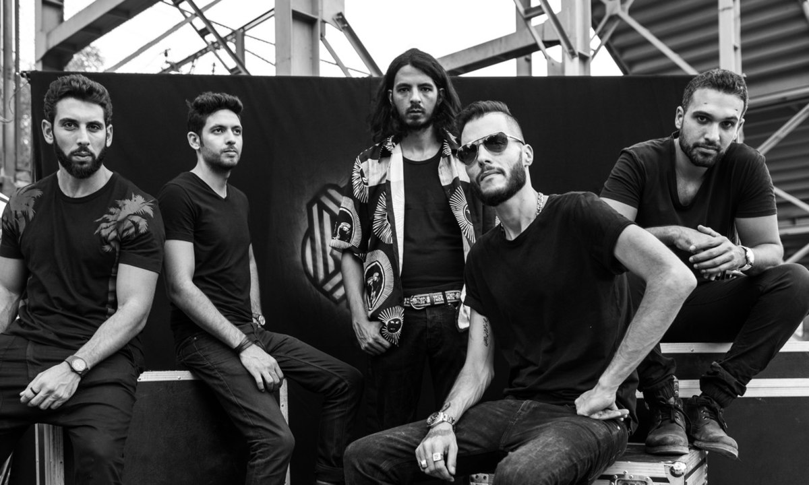
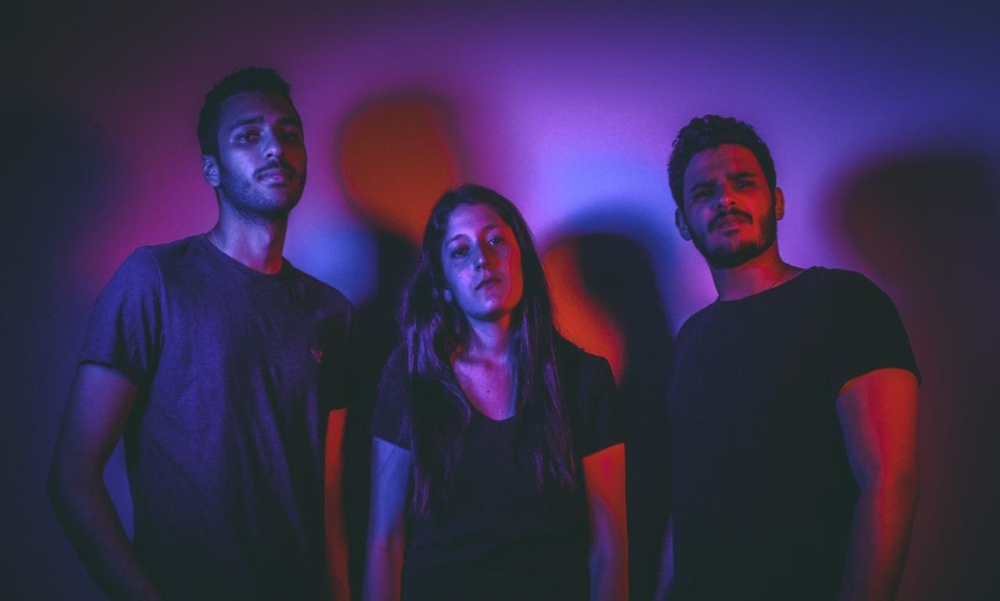

Youssef Azzam | June 6, 2021
I swayed to the sounds of drum beats and guitar riffs echoing across the Sawy Culturewheel’s riverside concert hall. It was the spring of 2011 and the weekend of my 13th birthday. Being the music addict I am, and just like any other teenager getting introduced to the realm of music, I leveraged my birthday and dragged my brother to one of Cairo's local venues in an attempt to explore the local music scene and discover hidden gems. Little did I know that this concert would be life-changing on various levels for my brother, myself and Cairokee, the band I was watching.
Growing up in Cairo in the early 2000s, and with western influences playing a huge role in Egyptian and Arab societies, Arabic pop music was a trending genre. With artists such as Amr Diab, Nancy Ajram and Tamer Hosny - who have been consistently topping charts and recently making the Forbes Middle East Celebrity list - mainly singing about love on modern pop beats, the first decade of the 21st century was characterized by Arabic pop music. It's worth noting that whenever a music genre starts trending in the MENA region, it's usually maxed out by overconsumption through advertisements and publicity-related contexts. As a result, and with most of the pop artists signed to record labels, the MENA music business had imposed a strict pop-esque monopoly on the industry which in turn controlled the creativity of the artists and contradicted one of the main fundamentals any artist stands for; freedom of artistic expression.
Basaal Aleiky by Cairokee - and young Youssef's rendition of it.
That said, my brother and I stood in awe as we saw the rising, underground band, Cairokee, perform their single Basaal Aleiky by the Nile. Thus, introducing us to Egyptian alternative-indie rock; a genre neither myself, my brother nor any young Arab of our age group had heard of before growing up. The concept of a band performing together as opposed to the predominant model of a mainstream solo artist enticed us. Just hearing them play their instruments and feeling the rhythm was all my brother and I needed to start our musical journeys respectively: him with the electric guitar and myself with the drums.
Cairokee's authentic lyrics, driven by cultural identity and igniting social change, depicted what Arab youth experience on a daily basis and managed to directly impact how my generation's identity shaped over the years. Through this musical upbringing, I became curious to learn more about regional and international bands, explore the various genres of music different from those I grew up listening to and find the push I needed to start my own alternative-indie rock band, Shaghaf.
Cairokee happen to have a beautiful success story. Founded in 2003 with a name that originates from a play-on the words "Cairo" and "Karaoke" and means singing along with Cairo, the band struggled for several years before having a nationwide breakthrough. From distributing their songs on CDs for free on the streets of Cairo to fighting for weekly performance slots at local cafes and restaurants to refusing to sign with record labels that would dictate their vision and the type of music they wanted to play, it was difficult for Cairokee - or any small yet rising artist at that point - to introduce new genres to the Egyptian music industry or receive any validation on what they are trying to do in the underground music scene.
Cairokee, the underground band that rose to international prominence
It wasn’t until the introduction of the internet as a medium, and the increased globalization and influences of online portals that accompanied it, that Cairokee and other (now) notable bands in the MENA region went viral on social media (Facebook and YouTube in specific), became popular on streaming platforms (most notably SoundCloud, Anghami and Spotify) and started getting the recognition they deserved.
Over the past decade, and with the rise of social media, both artists and fans were introduced to new gateways that enhanced their intertwined relationship. With the gradual disinterest in record labels being the middleman between an artist and their fanbase, artists took to social media to announce new collaborations, releases and updates. They found platforms that bypass industry standards and allow them to share more (personal) content with their fans.
On the other hand, fans too had greater access to their favorite artists’ lives. They easily knew what their artists were up to and were able to use different social media platforms for different music-related activities. For instance, with personalized music stickers and stories introduced by Facebook and Instagram as well as the rise of music streaming platforms (Spotify, YouTube Music, Soundcloud, Anghami, etc), people have become more creative in the way they share their music with each other and the world.
Although a wide range of platforms were introduced over the past decade, each has impacted the music industry in its own way. If we take a closer look at one particular social media application, TikTok, we notice how the application has become a goldmine for hits and emerging talent. From dance routines and magic tricks to comedy skits and lip-syncing, TikTok has given users both the chance and tools to be creative with their short videos by having songs or audio clips they admire play in the background. One of the main reasons behind the application's success is how it simplifies both the audio and video editing processes: it's fun, it's quick and it's hassle free. With around 62% of its active US-based users being millenials and Gen Z, typically the music consuming demographic, artists and songs have had better chances at success by going viral as part of a TikTok video - sometimes without even trying.
One quiet Sunday afternoon, the Jordanian teen artist Issam Alnajjar released his debut single, Hadal Ahbek. Little did he know that he would become an overnight success after TikTok users took out its melody, slowed down its tempo, applied reverb, then propelled it into stardom as the latest viral meme sound on the video-sharing application. Similarly, Tasneem Elaidy, an undergraduate music student at the American University in Cairo, was struggling to get her music recognized. The young Cairene singer had a follower base that plateaued around the 17k mark for a couple of months. It wasn't until she posted a 30 second cover of Masked Wolf's Astronaut in the Ocean that she went viral. Five million likes and one duet with Masked Wolf later, Tasneem has garnered over 3.3 million followers on her accounts in less than two months and immediate recognition from social media platforms.
Figure 1. A selection of songs that became highly popular on TikTok and also charted on the Billboard Hot 100.
By looking at both Issam and Tasneem's roads to fame, I started contemplating how virality nowadays has become every rising artist's end goal. Given the low costs that accompany the process, it has become increasingly common to reach the top of the charts. Nonetheless, despite all the engagement and reach flooding their social media accounts as well as songs generating hundreds of thousands of dollars, viral artists are at risk of remaining as disposable as one-hit wonder artists that categorized the 2000s. Considering the dynamic nature of trending sounds on TikTok and virality having a short lifespan, rising artists would need to quickly capitalize on their virality in order to sustain their successes and continue growing their careers. This shortsighted TikTok formula for immediate success however leaves artists straying off from building a proper connection with their potential fans, creating a gap between streaming for the trend and connecting with the artist on an emotional level to follow and support their progression.
There are various examples of artists who’ve been able to top BillBoard Charts following going viral on TikTok. One recent example is Olivia Rodrigo and her debut hit single, driver's license. Inspired by current trends, the 18-year-old artist made sure to include a piano hook in the form of a seventh chord note that would cue in TikTok users for the transition. Eight weeks of topping the billboard charts, two million TikTok videos and over 1 billion Spotify and Youtube combined streams later, driver's license stands as a testament to success in the modern day music industry.
Olivia Rodrigo's hit single drivers license
Consequently, artists are becoming more aware of how important it is to trend on social media platforms. Some are considering how they can cater their music to match current trends in hopes of the success that follows virality. Others however find themselves stuck at the crossroads of sticking to their own artistic identities - that might not be as popular - versus giving in to the pressures of social media, trends and going viral.
I’ve become increasingly aware of social media’s impact on the artistic process throughout my own musical journey. In 2016, my high school friends and I founded our own alternative-indie rock band, Shaghaf. Arabic for “passion”, we started the band as a means to communicate our thoughts, feelings, emotions, and identities through what we believe is the best medium to do so: music. Unlike many high school bands on the verge of graduating, we didn't split up and we all managed to attend the same college, NYU Abu Dhabi. As the years progressed, and as our band members were completing different majors with each having our own dreams and ambitions for life after graduation, we realized that distance and separation would be major bottlenecks to our artistic journey. Little did we know how negligible they both would be compared to the ever-changing trends of social media, the rising sounds of new genres and their combined effects on our creative process and artistic vision.
Over the past couple of years, the Arab region had been introduced to three new genres of music that gained wide popularity in a very short period of time; Arabic Rap, Arabic Trap and Shaabi music. The introduction of Digital Audio Workstations (DAWs), plugins and virtual instruments made it easier for their artists to make music. With one click of a button, artists can now play a note and have their softwares identify the rest of the scale before using their MIDI keyboards to compose. The fact that producing tracks for these rising genres is not a long and exhaustive process as when an alternative-indie rock band produces a track (in terms of hours required for practicing, recording sessions, and the overall length of the process) gave these genres a unique selling point and competitive edge.
Independent bands found themselves bombarded with rising artists, a faster way to produce music and a shift in interest from their fans towards new digitized sounds that characterize the rising genres. The bands had to find a way to adapt to change, rather than fight it. This is primarily what the MENA-based artists have been up to over the past couple of years. With a noticeable shift in favor for synths and pads over guitar solos and scales, underground bands and independent artists have replaced elements unique to the alternative-indie rock genre - that characterized the past decade - in an attempt to keep up with the ever-changing tastes of their audiences. This digitization of instruments and techniques, and the accessibility that came with the rise of the internet, made way for new genres and subgenres to be introduced to the greater musical landscape in the underground MENA music scene. Jordanian rising artists Zaid Khaled and Idreesi have been prominent examples for the birth of this new wave. They are currently paving the way for electronic, lo-fi, and neo-indie genres: blending between the old and the new.
Shaghaf (Left to right: Youssef Azzam, Sara Fakhry, and Ahmed Mitry)
Instead of focusing on how we can better express ourselves through our instruments and word choice, there was a time when Shaghaf was forced to focus on keeping up with the industry's newest trends, analyzing key components that now make up hit MENA songs and deciding on whether there are any elements that resonate with our style of music before incorporating them into our songs. Not only was our creative process taking longer than usual, but our marketing and PR plans had to be reassessed too.
With Arabic Trap, Rap and Shaabi artists releasing singles monthly as opposed to alternative-indie rock artists releasing full-length albums once every two years, Shaghaf became unsure whether releasing our debut EP album all at once would pay-off. In order for us to maximize our social media exposure and be present all year round, my bandmates and I had decided on releasing a new single each month off our new album — a technique to establish active presence on digital platforms recently implemented by other Arab indie artists such as Hamza Namira and Abdelrahman Roushdy.
Streaming platforms have also been greatly affecting the music industry. Not only did they impact the accessibility dynamic between artists and their fans, the range of music on offer or how an artist gets paid, but more importantly, and rather indirectly, impacted the artistic vision and process as a whole. Revenue models built off of royalty payments ensure that artists, producers and songwriters would profit off of every stream on the music platforms. This in turn, complemented by the shortening of attention spans and lack of patience, has notoriously affected not only the way artists profit from their songs, but also the musical restrictions and limitations that would make songs profitable. For instance, artists have explored shortening the lengths of their songs in an attempt to retain their audience's attention spans as well as have them stream at a higher rate - and they weren't wrong about it. The average hit song nowadays for Hot 100's Top 10 lasts around 3 minutes and 07 seconds - shrinking by a fifth from what it used to be 20 years ago.
Given the aforementioned and with time passing, my band and I became consumed by the internet, social media, and the standards set forth by the music industry. Despite being important factors for success in this digital age, what we later realized was how important it is to always remember why we started our band in the first place: to make music that expresses who we are.
2021 marks ten years of my venture into the world of music, both as a fan and an artist. As the years progressed, I watched as the crisp sound that once made Cairokee distinctive changed and their identity transformed into something foreign from what myself and other fans first fell in love with. I started the decade listening to alternative-indie rock and covering Cairokee's Basaal Aleiky before ending it by making music that falls under that genre. I noticed as new artists rose to the scene and new sounds came to life in the MENA region. In this fast-paced, digital world we now live in, the limitations set forward by streaming platforms, social media and the internet as a whole as well as the fundamental nature of life, I have come to realise two important facts: change is inevitable and everyone is an artist in their own way.
There's no denying that the music scene both regionally and globally has been changing over the past decade and will continue to as time progresses. What's important to remember is that artists should work towards finding that sweet spot where everything balances out. Shorter songs should not compromise quality, using softwares for faster music production should not be the easy way out and, most importantly, artists should never let any restrictions limit their artistic vision and overall creative process. Regardless of record labels, the internet, social media and any medium that might pop up in the near future, there's no way any artist would be able to appeal to everyone's taste and there's no right or wrong way to go about creating art or making music.
With the weekend of my 23rd birthday coming up soon, I'll be dragging my brother yet again to one of Cairo's local venues to explore the ever-evolving, local music scene and discover hidden gems. Hopefully, we would be lucky enough to come across a new sound that characterizes this new decade.
Here is a playlist of every single song mentioned in this article. Enjoy!
We believe in furthering the conversation on the internet's influence an musicians beyond this article. Here are a few resources from Youssef to get that started:
1. A Closer Look at Contemporary Egyptian Music Trends | Egyptian Streets
2. Cairo Pop: Youth Music in Contemporary Egypt | Daniel J. Gilman
3. How TikTok Became the Music Industry's New Fame Machine | Rolling Stone
4. Amanda Palmer and the Art of Asking | TED
5. Music and Media in the Arab World | Michael Frishkopf
6. Drivers License’ Is a Runaway Hit. See How Olivia Rodrigo Made Her No. 1 Song | New York Times